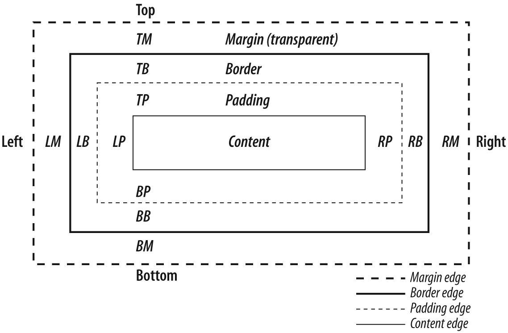

How browsers work

The main function of a browser is to present the web resource you choose, by requesting it from the server and displaying it in the browser window
The browser's high level structure
The rendering engine
The rendering engine is responsible for displaying the requested
content on a browser screen.
After that, this is the basic flow of the rendering engine:

Parsing and DOM tree construction
Parsing a document means translating it to a structure the code can use.
The result of parsing is usually a tree of nodes that represent the structure of the document.
This is called a parse tree or a syntax tree.
Grammars
- vocabulary
- syntax rules
Parsing can be separated into two sub processes:
- lexical analysis (process of breaking the input into tokens)
- syntax analysis (applying of the language syntax rules)
Parsers usually divide the work between two components:
- lexer (tokenizer)
- parser
Generating parsers automatically
There are tools that can generate a parser. You feed them the grammar of your language – its vocabulary and syntax rules – and they generate a working parser.
- Flex (lexer)
- Bizon (parser)
- HTML not a context free grammar
- HTML Document Type Definition
Render tree construction
- Render tree generated while DOM tree is constructed
- This tree is of visual elements in the order in which they will be displayed
- Firefox calls the elements in the render tree "frames". WebKit uses the term renderer or render object.
- Each renderer represents a rectangular area
WebKit code for deciding what type of renderer should be created for a DOM node, according to the display attribute:
Layout
Layout
- calculates position and size of rerender
- most of the time it is possible to compute the geometry in a single pass
- the coordinate system is relative to the root frame
- recursive process - begins at the root renderer
Dirty bit system
A system that makes sure that browsers don't need to do the full layout for every small changeGlobal and incremental layout
- Global - Layout can be triggered on the entire render tree
- Incremental - only the dirty renderers will be laid out
Painting
The render tree is traversed and the renderer's "paint()" method is called to display content on the screen.
- Global
- Incremental
The painting order
- background color
- background image
- border
- children
- outline
CSS visual model
CSS Box-Model
Positioning scheme
- Normal
- Float
- Absolute